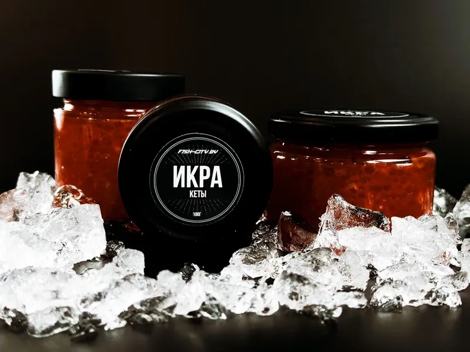

Икра
Икра кеты 100г
Цена и наличие
- 100 г89 BYN / шт.В наличии
Данные на 23.11.2026.
Характеристики
- Размерный ряд
- 100 г
- Упаковка
- стекло
Описание
Икра кеты представляет собой продукт, который обладает множеством положительных характеристик, делающих его привлекательным для потребителя.
ОСНОВНОЕ
Упаковка стекло Пищевая ценность на 100 г продукта белки – 33 г, жиры – 13 г, углеводы – 0 г Энергетическая ценность на 100 г продукта 249 ккал Состав икра кеты, соль поваренная, масло подсолнечное рафинированное, пищевые добавки (влагоудерживающий агент Е422, консерванты Е200, Е211) Изготовитель ООО “Ист-Трейдинг”, Камчатский край Условия и срок хранения хранить при температуре от -4 ℃ до -6 ℃ срок хранения не более 8 месяцев с даты производства; температура хранения икры -4 -6, а в бытовом холодильнике +4 +6, храним в нулевой зоне не больше 14 дней; с момента вскрытия банки храним не более 2 суток
ДОПОЛНИТЕЛЬНО
Красная икра кеты в фасовке 100 г — удобный формат для завтрака, небольшого праздничного стола или приготовления холодных закусок. Такой объем подойдет для бутербродов, блинов, тарталеток, канапе и аккуратной порционной подачи. Икра кеты отличается крупными икринками, нежной оболочкой и мягким, деликатным вкусом. За счет крупного размера она эффектно смотрится при сервировке и хорошо подходит для праздничных блюд, где важны не только вкус, но и внешний вид. Фасовка 100 г удобна для небольшой семьи, дегустации или покупки нескольких видов красной икры одновременно. Продукт можно подать со свежим хлебом, сливочным маслом, блинами, тостами, сливочным сыром и яйцами. Красная икра кеты хорошо подходит как для классической подачи, так и для оформления рыбных тарелок и закусок. Ее часто выбирают для праздничного меню благодаря крупным икринкам и мягкому вкусу без излишней резкости. В продаже — икра кеты 100 г в компактной фасовке. Такой объем удобно использовать сразу после открытия, не оставляя большое количество продукта на хранение. Заказать икру кеты 100 г можно для бутербродов, блинов, тарталеток, праздничных закусок и сервировки рыбных блюд.